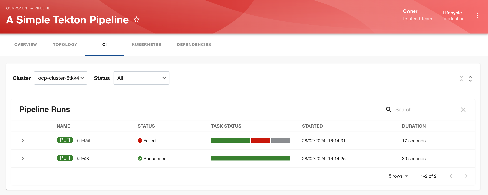
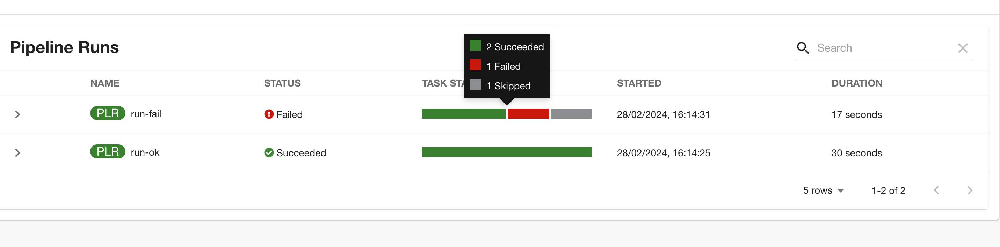
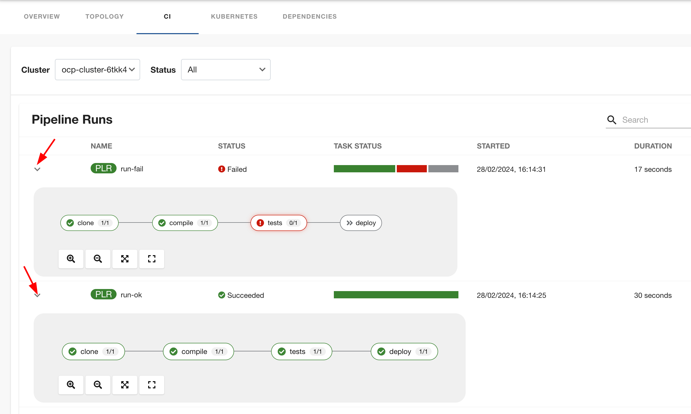
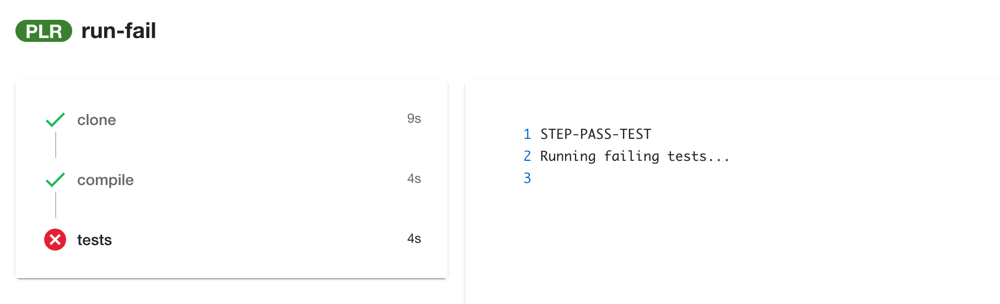

Tekton Plugin
The RHDH Tekton plugin provides a quick, read-only visualization of your Tekton continuous integration (CI) pipelines and task runs in the RHDH web UI. This allows developers to get quick feedback about their CI builds and status without ever leaving the RHDH web UI. The plugin displays the latest status of pipeline runs and the status of the tasks in the pipelines. Developers can easily identify tasks that failed and take quick, remedial action.
Lab: Configuring the Tekton Plugin
Pre-requisites
-
Install the
Red Hat OpenShift Pipelinesoperator by following the official product documentation at https://access.redhat.com/documentation/en-us/red_hat_openshift_pipelines/1.14/html-single/installing_and_configuring/index#op-installing-pipelines-operator-in-web-console_installing-pipelines -
(optional) Download the Tekton CLI (
tkn) for your platform from https://mirror.openshift.com/pub/openshift-v4/clients/pipelines/latest. This will come in handy when troubleshooting and debugging pipeline runs. -
You must have enabled and configured the Kubernetes plugin for RHDH as per the instructions in the Kubernetes and Topology Plugin section. The Kubernetes plugin must be made aware of the
pipelinerunsandtaskrunscustom resources in thetekton.devgroup for the Tekton plugin to get data from pipeline runs. You must also ensure that theClusterRolefor thedefaultservice account has read-only access to these custom resources.
Steps
-
Log in to the OpenShift cluster as the cluster administrator using the
ocCLI. -
Download and inspect the sample Tekton CI pipeline at https://github.com/RedHatQuickCourses/devhub-qc-apps/blob/main/ci-cd/pipeline.yaml. For simplicity sake, the pipeline consists of 4 tasks that each print a message to the console. You can use much more complex pipelines with more realistic workflows if you wish.
-
Create the pipeline in the
myappsnamespace.$ oc apply -f pipeline.yaml -n myapps
-
Typically, pipelines are triggered by a Git repository commit, but for the purposes of this lab, we can launch the pipeline using the
ocCLI and YAML files describingPipelinerun resources. Inspect the https://github.com/RedHatQuickCourses/devhub-qc-apps/blob/main/ci-cd/run-ok.yaml and https://github.com/RedHatQuickCourses/devhub-qc-apps/blob/main/ci-cd/run-ok.yaml file. These simulate a successful and failed pipeline run respectively. -
Start the pipeline runs
$ oc apply -f run-ok.yaml $ oc apply -f run-fail.yaml
-
Upgrade the RHDH helm chart in YAML mode and enable the Tekton plugins:
- disabled: false package: ./dynamic-plugins/dist/janus-idp-backstage-plugin-tekton -
Click
Upgradeto re-deploy the chart and for the new configuration to take effect. Wait until the RHDH container is fully up and running. -
Finally, inspect the catalog YAML descriptor file for this component at https://github.com/RedHatQuickCourses/devhub-qc-apps/blob/main/ci-cd/catalog-info.yaml. Adjust the values for your environment. Note the
janus-idp.io/tektonannotation to match the name of the pipeline resource (mypipeline), plus label selector for the pipeline.apiVersion: backstage.io/v1alpha1 kind: Component metadata: name: mypipeline title: A Simple Tekton Pipeline description: | This is a simple Tekton Pipeline annotations: backstage.io/kubernetes-id: 'mypipeline' backstage.io/kubernetes-namespace: myapps backstage.io/kubernetes-label-selector: 'app=mypipeline' janus-idp.io/tekton : mypipeline spec: type: pipeline ... -
Import the component into the RHDH catalog from the
Create > REGISTER EXISTING COMPONENTpage, and provide the full path to thecatalog-info.ymlfile from the previous step. After the component is imported, verify that the component is listed in theCatalogpage and click onA Simple Tekton Pipelineto view the component details. -
Verify that you can see a new tab named
CIin the component details page. You should see the result of the two pipeline runs. -
Mouse over the
TASK STATUScolumn and you should see a high level summary of the tasks (how many passed, failed, or skipped). -
You can expand each of the pipeline runs (by expanding the greater than symbol to left of the pipelinerun name) and view the detailed status. Note that the
teststask has failed in therun-failpipeline run. -
Click on the failed
teststask in therun-failpipeline run to view the logs. In an actual application, you will see the unit test failure stack trace and other logs. In this case, the task simply prints a message.